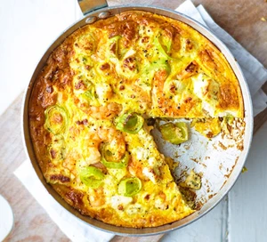

Prawn & Leek Frittata

Omelettes step aside, this four-ingredient frittata is a speedy weeknight lifesaver that's packed with flavour and goes well with salad or crusty bread.
Ingredients
- 3 Large leeks
- 150g pak raw peeled king prawns
- 5 large eggs
- 120g garlic & herb cream cheese
Method
- Heat 2 tbsp olive oil in a medium frying pan.
- Slice the leeks and add to the pan, cooking for 5 mins.
- Add the prawns and cook for 1 min more.
- Beat the eggs and whisk through half the cream cheese. Season to taste.
- Pour the mixture over the prawns and leeks, dot over the remaining cheese and cook on a medium heat for 5-8 mins.
- Finish under a medium-hot grill for 2 mins until just set with a slight wobble.